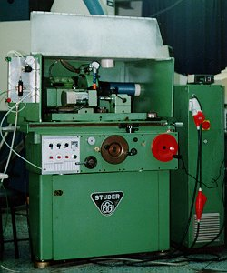

LMP>Research Guidelines>GENDEF>"Touch - Dressing" em Rebolos de CBN
OBJECTIVES Os OBJECTIVES desta linha de pesquisa são a comprovação
do ganho que se obtém com a implementação do processo
de dressamento conhecido com "touch - dressing" em rebolos de CBN
e a verificação da dificuldade inerente ao processo devido a
fatores a serem determinados antes da execução do micro - dressamento.
INTRODUCTIONEsse novo processo de dressamento aplica - se principalmente em rebolos CBN ou adiamantados, onde a porção atuante do rebolo tem um valor agregado muito grande e sua utilização otimizada faz com que o processo se torne mais viável economicamente. PROCEDURESPara início da processo de "touch – dressing" deve - se realizar com a maior segurança possível a detecção do primeiro contato do rolo dressador com o rebolo a ser dressado. Isso se deve ao fato de que as profundidades de corte se encontram na faixa micrométrica e por isso qualquer contato inicial maior entre os dois corpos pode comprometer todo o posterior processo de dressamento. Para essa identificação segura do primeiro contato utiliza-se um aparelho de monitoramento da firma Prometec, de modo que através da emissão acústica se possa obter o exato momento do primeiro contato. O trabalho também deverá conter uma série de ensaios para a otimização dos valores para os parâmetros a serem ajustados. RESULTSOs resultados a serem alcançados nesta pesquisa são o intervalo de tempo necessário entre dressamentos e avaliação de quais parâmetros de dressamento dão os melhores resultados para os rebolos de CBN disponíveis. Uma análise da topografia do rebolo e da superfície retificada será também analisada em microscópio ou rugosímetro. Valores da rugosidade da superfície da peça obtida com rebolos dressados por "touch - dressing" devem apresentar valores menores ou equivalentes aos das peças retificadas com rebolos dressados convencionalmente pelo processo de dressamento habitual. Com isso a validade do processo, por este consumir muito menos rebolo durante o dressamento do que o processo convencional, deve ser confirmada.  |
| Contact: GENDEF Walter Lindolfo Weingaertner Prof. Dr.-Ing |
Last update 21.06.2006 |